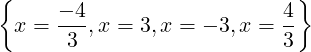

| Up | Next | Prev | PrevTail | Tail |
The operators r_solve and i_solve compute the exact rational zeros of a single univariate polynomial using fast modular methods. The algorithm used is that described by R. Loos ([Loo83]). The operator r_solve computes all rational zeros whereas the operator i_solve computes only integer zeros in a way that is slightly more efficient than extracting them from the rational zeros. The r_solve and i_solve interfaces are almost identical, and are intended to be completely compatible with that of the general r_solve operator, although r_solve and i_solve give more convenient output when only rational or integer zeros respectively are required. The current implementation appears to be faster than solve by a factor that depends on the example, but is typically up to about 2.5
Extension to compute Gaussian integer and rational zeros and zeros of polynomial systems is planned.
The first argument is required and must simplify to either a univariate polynomial expression or equation with integer, rational or rounded coefficients. Symbolic coefficients are not allowed (and currently complex coefficients are not allowed either.) The argument is simplified to a quotient of integer polynomials and the denominator is silently ignored.
ARBRAT Subsequent arguments are optional. If the polynomial variable is to be specified then it must be the first optional argument, and if the first optional argument is not a valid option (see below) then it is (mis-)interpreted as the polynomial variable. However, since the variable in a non-constant univariate polynomial can be deduced from the polynomial it is unnecessary to specify it separately, except in the degenerate case that the first argument simplifies to either 0 or 0 = 0. In this case the result is returned by i_solve in terms of the operator arbint and by r_solve in terms of the (new) analogous operator arbrat. The operator i_solve will generally run slightly faster than r_solve.
The (rational or integer) zeros of the first argument are returned as a list and the default output format is the same as that used by solve. Each distinct zero is returned in the form of an equation with the variable on the left and the multiplicities of the zeros are assigned to the variable root_multiplicities as a list. However, if the switch multiplicities is turned on then each zero is explicitly included in the solution list the appropriate number of times (and root_multiplicities has no value).
Optional keyword arguments acting as local switches allow other output formats. They have the following meanings:
|
 |
| {x = 3,x = −3} |
See the test/demonstration file rsolve.tst for more examples.
The switch trsolve turns on tracing of the algorithm. It is off by default.
| Up | Next | Prev | PrevTail | Front |